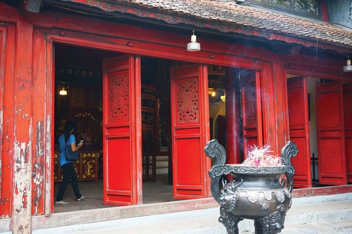
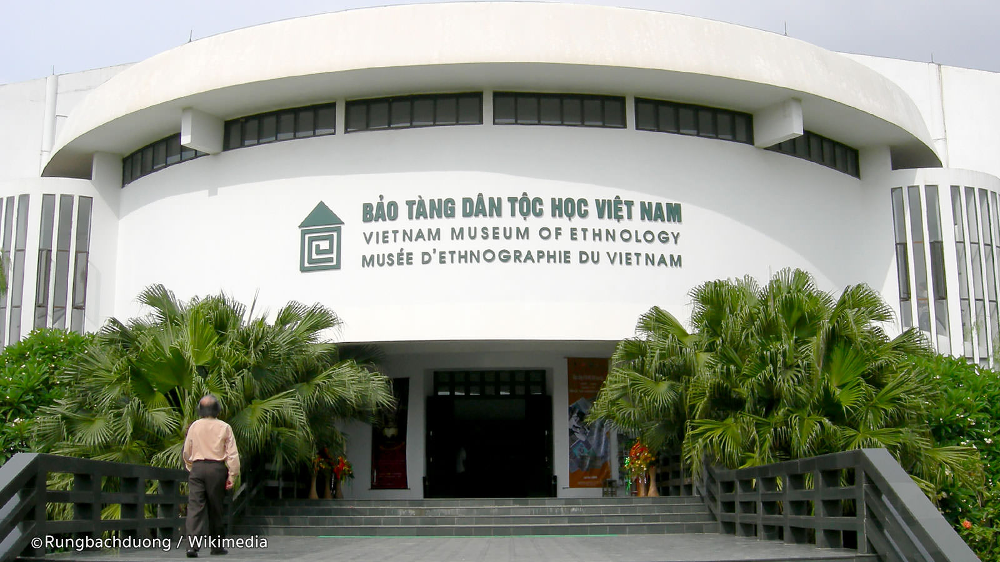
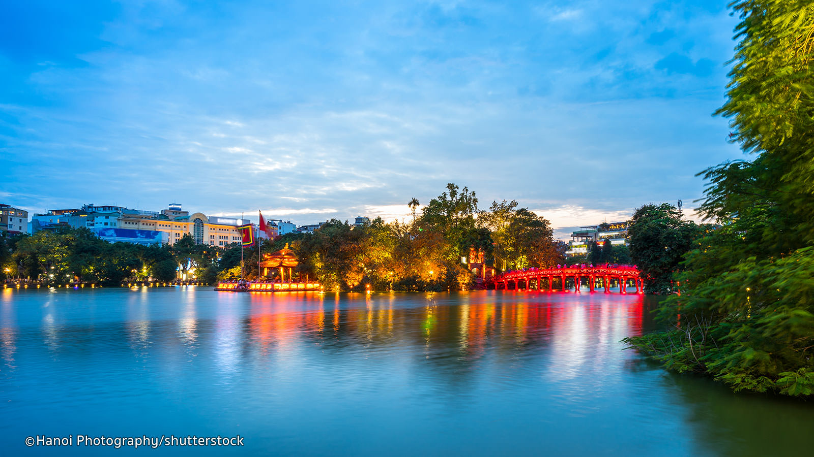
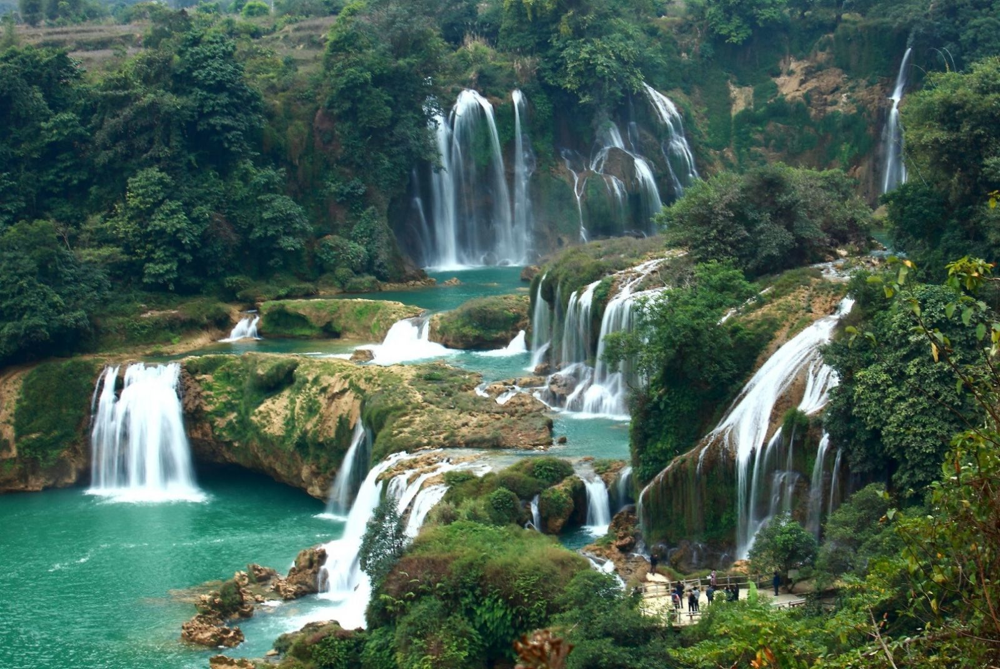
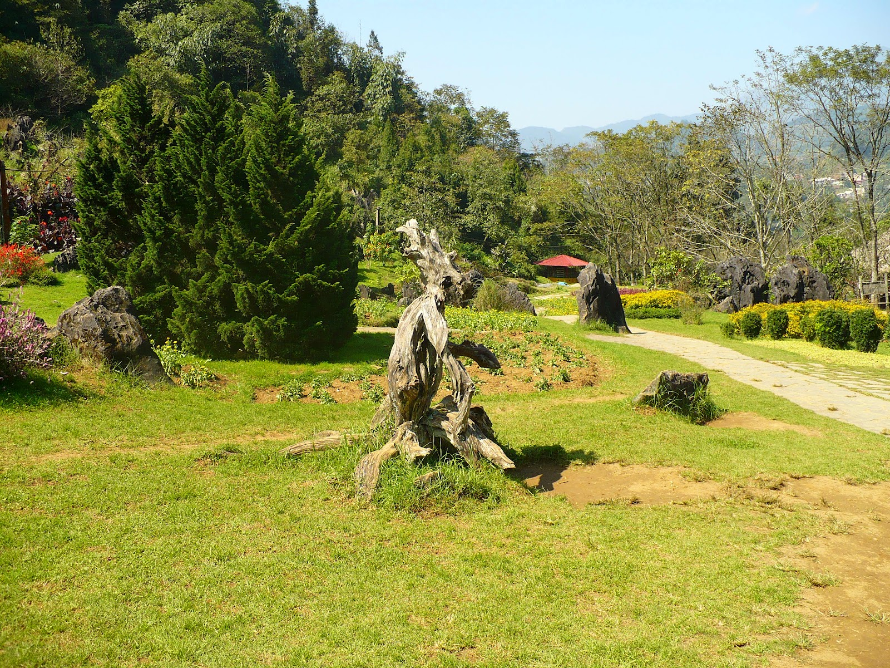
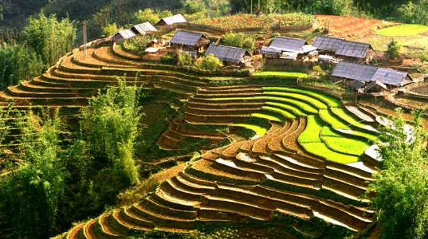
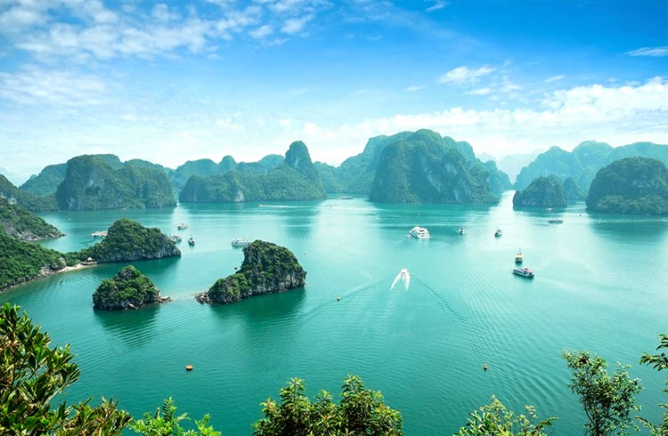
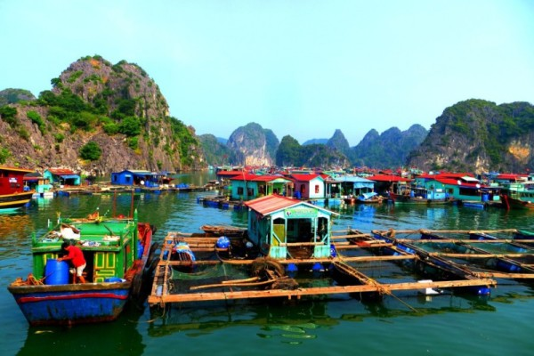
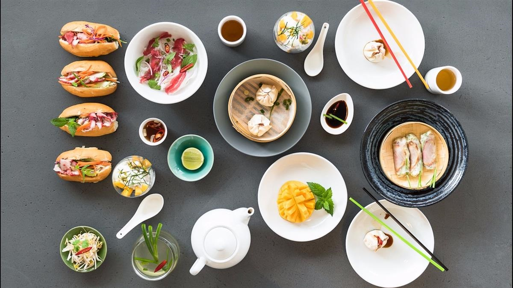

| University of Vietnam | Ethnology Museum | Hoan Kiem lake |
|---|---|---|
|  |  |  |
| Today, we discover deeply the capital of Vietnam, filled with timeless charms. Start to visit the Van Mieu (Temple of Literature) the first University of Vietnam built from the 11th century by Emperor Ly Thanh Tong.Continue to visit Chua Ha (Ha Pagoda) known as a sacred place to pray for the luck in love, especially for the future spouse. | After that, transfer to Ethnology Museum (closed every Monday) which offers a deep insight into our Vietnam cultures through traditional costumes, tools, music instruments and real typical traditional house of many minority ethnic groups. Enjoy a special water puppet show in the museum garden. | Transfer to the old quarter to visit the Hoan Kiem lake ( Restored Sword Lake) and Ngoc Son temples in the middle of the lake.In the late afternoon, take a night train to Sapa. Overnight on Train (Share 4 Berth AC cabin). |
| Silver Water fall | Dragon Jaw Mountain | Dragon Jaw Mountain |
|---|---|---|
|  |  |  |
| After breakfast at your hotel, our guide will meet you for a visit to Silver Water fall. This is one of the highest and most beautiful falls in Sapa. | It time for you to relax and take photos before driving back to Sapa town for your own lunch, relax then checkout the hotel before exploring the Dragon Jaw Mountain.Walking up to the mountain is the way to enjoy the beauty of the landscapes and alot of flowers on the way. | From the top of the Dragon Jaw Mountain, you will able to view all Sapa town with its charm and the Peak of Fansipan from distance. Dinner is on your own then transfer to Lao Cai railway station for night train to Hanoi. Overnight on train ( Share 4 berth AC cabin) |
| Halong Bay | Ba Hang fishing village | Vietnamese lunch |
|---|---|---|
|  |  |  |
| Start your day with Tai Chi exercises or a photo hunt. Have breakfast on board and enjoy the peaceful morning of Halong Bay. | Kayak among the hidden areas of the bay, around the Drum Cave. Return to the boat. Freshen up and check out of your cabin. Continue your cruise exploring the Bay, passing Ba Hang fishing village, Dog Islet, and more. | While heading back to the harbor, watch the fruit carving demonstration and participate in the Cooking Class before enjoying a traditional Vietnamese lunch. Transfer back to Hanoi. Free on your own in the old city. |
| Price List | |
|---|---|
| Numbers of people | Usual Price |
| Single | $1120 |
| Dual | $2200 |
| Triple | $3300 |
| Four and above | $1100 for each |